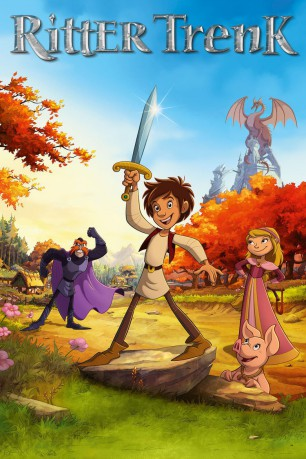

#3519 Ritter Trenk
 gesehen am 22.04.2016
gesehen am 22.04.2016
 
 IMDB-Wertung: 6.3 / 10
IMDB-Wertung: 6.3 / 10  Metascore: 0
Metascore: 0 
Der furchtlose Bauernsohn Trenk Tausendschlag will seine Familie vom Joch des unbarmherzigen Ritter Wertolt befreien, nachdem sein Vater Haug Tausendschlag von Wertolt wegen angeblichem Ungehorsams in den Kerker gesperrt wird. Basierend auf der erfolgreichen Kinderbuchreihe „Der kleine Ritter Trenk“.
Jahr: 2015
Dauer: 79 Minuten
FSK:
Land: Deutschland Studio: UFATonspuren:
Untertitel:
Auflösung: 1080p (1920x1040) Größe: 2580 MB
Genre: Animation/Trick
Regisseur: Anthony Power
Drehbuch: Josip Mlakic
Soundtrack:
Darsteller:
Datei: X:\Kinder Filme (N-Z)\Ritter Trenk (2015, FSK, 1920x1040).mkv seit 22.04.2016
Festplatte: Kinder-Filme+Trick
 Es gibt insgesamt 87 Filme in der Gruppe 'Kinder Filme (N-Z)'
Es gibt insgesamt 87 Filme in der Gruppe 'Kinder Filme (N-Z)'